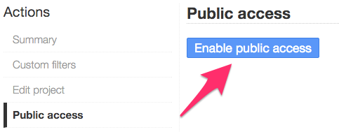
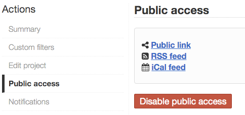

Sharing boards and tasks¶
By default, boards are private but it’s possible to make a board public.
A public board cannot be modified, it’s a read-only access. This access is protected by a random token, only people who have the right URL can see the board.
Public boards are automatically refreshed every 60 seconds. Task details are also available in read-only.
Usage examples:
- Share your board with someone outside of your organization
- Display the board on a large screen in your office
Enable public access¶
Select your project, then click on “Public access” and finally click on the button “Enable public access”.

Enable public access
When the public access is enabled, a couple of links are generated:
- Public board view
- RSS feed subscription link
- iCalendar subscription link

Disable public access
You can also disable the public access whenever you want.
Each time, you enable or disable the public access a new random token is generated. The previous links will not work anymore.